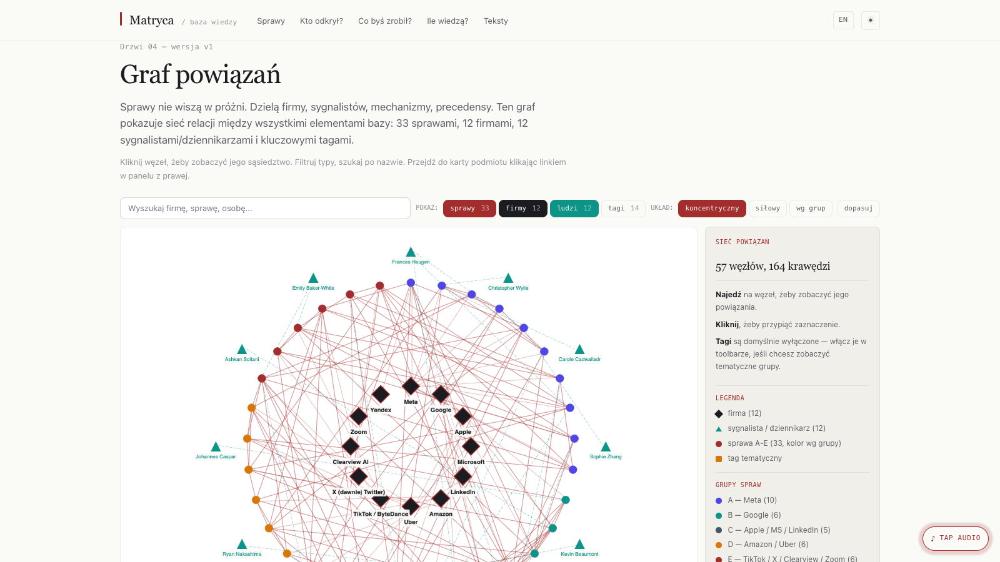

The next person writing a master's thesis on platform power shouldn't have to start from page one of every story. The next journalist writing about Meta shouldn't have to rebuild the timeline of Cambridge Analytica from scratch. The next NGO drafting a policy brief shouldn't have to count the RODO fines manually.
Matryca is the index that doesn't exist anywhere else: each Big Tech case mapped to its evidence, its outcome, its repeating pattern. Built once. Maintained continuously. Free to cite.
There are individual investigations (Wired's Cambridge Analytica piece, the Snowden archive, MacKinnon on consent), there are policy reports (EU Commission, Panoptykon, EFF), there are databases for narrow domains (Privacy International on surveillance). What's missing is the cross-cutting index — every documented case in one place, with the same data model, so you can ask comparative questions.
"Which companies have the most RODO fines?" "Which years had the most antitrust action?" "Which whistleblowers triggered which investigations?" Those answers should be one click away. They weren't.
One data set. Five ways to enter it.
Co — the cases as a filterable grid (by company, year, fine, category).
Kiedy — the chronology, 2007 (Facebook Beacon) to 2026.
Gdzie — a map of regulators and where decisions happened.
Dlaczego — a network graph: cases, companies, regulators, whistleblowers as nodes; relationships as edges.
Kto odkrył — the people who pulled the threads: whistleblowers, journalists, researchers, activists.
Same data underneath. The visitor picks the door that fits the question they came with.
Every claim links to its primary source. Every case has a permalink. The dataset is downloadable as a single XLSX file (00_INDEKS_bigtech_skandale.xlsx) for anyone who wants to do their own analysis.
Citation format published on the site, so academic and journalistic citations point to a stable URL. The portal is updated as new cases emerge (Meta RODO 2023, OpenAI antitrust 2025+, etc.).
Astro for the static site (fast, small, SEO-friendly). React islands only where they earn it — the network graph (D3-force layout), the timeline filter, the search box. Pagefind for full-text search across all 33 cases. SCSS for the editorial typography.
Source data lives in MD/JSON files in the repo. New case = new markdown file. The whole index rebuilds in under 30 seconds.
Pick a door — Cases, Timeline, Map, Graph, or Whistleblowers. The data is the same. The path you take through it is yours.
Open Matryca